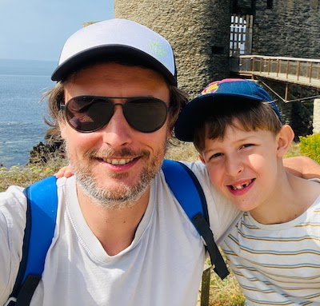

Fabien Furet
Quality & performance through simplicity
39 years old, 👨👩👦 + 😺
Paris area, France 🇫🇷
Remote worker 10 years+ 🏡💻
fabien.furet@gmail.com // +33687321068
Website - Github - Twitter
Paris area, France 🇫🇷
Remote worker 10 years+ 🏡💻
fabien.furet@gmail.com // +33687321068
Website - Github - Twitter
Skills
🕵️ Problem solver, takes initiative to identify and solve important problems
🤝 Business oriented, I can bridge with stakeholder, sales, clients...
😸 Require minimal direction/oversight
👊 Very good communication, positive approach, working well within a team
🇬🇧 Fluent in English
💻 Tech
- Backend / Frontend agnostic
- React & ReactNative enthusiast
- Firebase platform enthusiast
- LAMP stack veteran
- TypeScript enthusiast
- Node.js enthusiast
- Python compatible
- Industry standards: test, code review, continuous integration etc...
👨🎓 Area of improvements
- IA & data science
- Docker
- Serverless
- Python
Career
IWD
CTO & Board member (2006-2021)
IWD provides a SaaS platform that allows clients to manage their merchandising and in-store execution.“I wanted to start a project from scratch. I got the chance to meet Nicolas & Gabriel in a garage, true story, where they showed me the POC they already sold to Shiseido. They were looking for their future CTO to build it as a SaaS. I had no experience as CTO but I guess my arguments worked and that was the beginning of a long journey! Everybody asks me why I stay that long? Well the company was changing every 3-4 years in terms of size, products, practices… it was like a new one and I was growing with it”
Achievement
🚀 Help scale the company from 3 to 120 people, 3 to thousands users, 0 to 10M$+ revenue, 0 to 7 offices across the globe
💰 Help raise funding with Ardian in 2018
💰 Help close deals when tech & automation involved with a prospect
👨🔧 Audit and integrate VR tech team after the buyout, during the covid period 😱
💪 Build, hire & manage a remote tech team of 35+ people based in 🇫🇷 🇷🇴 🇺🇸 🇸🇬
👌 Quality as core value: code review, unit / integration / e2e testing, robust CI, "one button deploy" mindset
👨💻 Tech team turnover < 6% = autonomous + quality + sustainable rhythm + continuous improvement + remote
👨🏫 Mentor the Lead developers to guide their own squads
🤓 Never stopped coding or design products with the team, focus on React Native & TypeScript for the last 3 years
Stack
- Web: TypeScript + React (Cypress, Jest, React Testing Library, React Query)
- Mobile: TypeScript + React Native (Detox, Jest, React Testing Library, Redux) - Firebase platform: Messaging, Firestore, Cloud Function..
- 2D editor: TypeScript + React + custom render engine via Canvas
- 3D editor: C# - Unity SDK
- Backend: REST API with PHP (Symfony) + MYSQL + REDIS + ELASTICSEARCH
- Infrastructure: AWS via Ansible/Terraform
- CDN: AWS CloudFront
- Monitoring: Nagios - Appoptics - Bugsnag - ELK
- Alerting: Slack - Email
- Security: AWS WAF - Tenable - Qualys
Ki Communication
Lead developer (2003-2006)
Ki communication was a web agency with a focus on culture & ads.We were the agency of all Columbia Tristar movies websites: Spiderman, Men in Black, PeterPan… For blockbuster we build casual games in Flash like isometric games, multiplayer real time shoot 'em up...
We were managing all the digital ads of Air France with a homemade tool that was generating and serving ad banners to brokers like Double Click.
Achievement
🚀 Grow myself as a team leader in a very intensive and deadline driven environment
💪 Build, hire & manage a tech team from 3 to 10+ people
🛠️ Early adoption of web standards and CSS based design
⚡ Early adoption of ActionScript 2 and mentor team on POO practice
Stack
- Web: XHTML + CSS2 + Javascript
- Mobile: iPhone was release in 2007 😅
- Games: Flash AS1 - AS2 + Adobe Media Server
- Backend: PHP + MYSQL
- Infrastructure: Bare metal servers with Debian
ORSYP
Developer (2002-2003)
ORSYP was an old fashion software company that created automation software for the industry, pre-cloud area.I was working on the marketing team to operate the company website and intranet in a team of 10 with one senior developer that know nothing about web 😆
Achievement
🚀 Grow myself as a young developer
👨💼 Learn how to navigate in a very big corporation
👨💻 Train myself as I didn’t have any technical mentor
Stack
- Web: HTML + CSS + homemade Javascript
- Backend: ASP + ACCESS
- Infrastructure: Bare metal servers with IIS
Community
Talk (🇫🇷 only)
- Hire your developers, 10 years feedbacks (2018) slides
- REST in peace, best practices to build a pragmatic and efficient REST API (2015) slides
- Standing desk WTF?, feedback after 3 months (2014) slides
Opensource
RREST was a library to enforce REST best practice and improve developer xp by managing most of the i/o.
It allowed the developer to focus on business code and not plumbery, you just needed to define the contract via an API Spec (RAML, OpenAPI) and create the controller. That’s it.
We used it internally to build the early stage of our API and then we internalized the development.
My initial idea was to support this project but I already had enough on my plate!
Interest
👦 Spending time with my son
🧐 Tech watch on a daily basis, my RSS feed reader & Twitter mostly
🏃 Running and playing tennis on a weekly basis
👨🌾 Gardening my piece of land
📚 Reading, mainly history and essay books